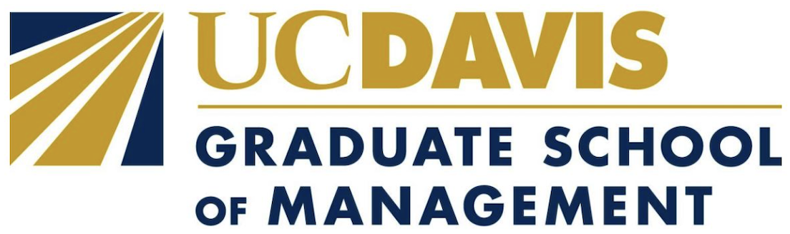
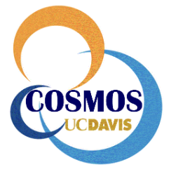

Dhruv Jani
MS Operations Research @ Columbia University
BS Mathematics @ University of California
ABOUT
Hi, I’m Dhruv. I recently graduated from Columbia University with a Master’s in Operations Research & Analytics. I started out broadly in data science and optimization, but over time I’ve found myself increasingly interested in quantitative finance and how mathematical models can be used to understand and navigate markets.
I’ve worked on a mix of ML and research-driven projects with organizations like Apple, NIH, and UC Davis. Right now, I’m focused on building my skills in financial modeling, data-driven strategy, and applying what I know to more market-oriented problems.
Outside of work, I play the piano and follow cricket—both keep me grounded when things get intense.
Education

Columbia University
2023-2024
MS Operations Research & Financial Engineering
University of California, Davis
2019 - 2023
BS Mathematical Analytics & Statistics (magna cum laude)
Research
Columbia University Irving Medical Center
-
Clinical NLP Data Extraction
Graduate Research Assistant
Feb 2025 - June 2025 -
Drug Discovery & Molecular Docking
Graduate Research Assistant (National Institutes of Health)
Sep 2023 - Dec 2023 -
Graduate School of Management
Undergrad Research Assistant
Sep 2022 - June 2023
University of California, Davis
Work Experience
Bronx Math Preparatory School
Feb 2026 - Present
Data-Driven Math Instructor
Storied Data (now Guut)
Sep 2025 - Feb 2026
Analyst
Numeraxial
Feb 2025 - Aug 2025
Summer Analyst
Laymans - LegalTech Startup
June 2024 - Dec 2024
Data Science Fellow
New York Genome Center (NYGC)
June 2024 - Aug 2024
Research Assistant @ Vickovic Lab

Graduate School of Management, UC Davis
Sep 2022 - June 2023
Research Analyst (Mergers & Acquisitions)
Apple
June 2022 - Aug 2022
Intern

California Summer School for Math & Science (COSMOS) UC Davis
June 2021 - June 2022
Program Assistant
Projects
-
Stock Market Dashboard
An interactive web dashboard for stock price analysis and forecasting
Report Github -
Text-2-Image
Generate high-quality images from user-provided text prompts
Report Github -
Drug Discovery
-
Regenerative Organizing Cell in the Frog tail
Applied Data Science for Genomics (STAT 5243) @ Columbia University
Github -
Cell Segmentation Classifier(Random Forest Model)
Applied Data Science for Genomics (STAT 5243) @ Columbia University
Github -
U-Net Medical Imaging Segmentation
Applied Data Science for Genomics (STAT 5243) @ Columbia University
Github -
Image Segmentation via Minimum Cut
Computational Discrete Optimization (IEOR 4008) @ Columbia University
Report Github Presentation -
Tic-Tac-Toe Game
A simple CLI implementation of the Tic-Tac-Toe game
Report Github -
Nifty50 Stocks Financial Analysis
Analyze Nifty50 stock data to calculate risk metrics, portfolio returns, and technical indicators
Report Github